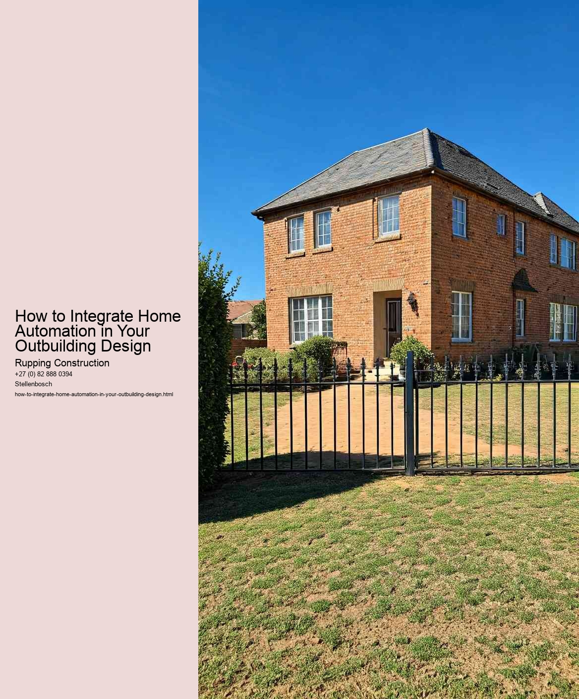

Choosing the Right Home Automation System for Outbuildings
As homeowners increasingly seek to enhance their living spaces through technology, the integration of home automation systems in outbuildings has gained significant attention. Whether its a garden shed, garage, or an entirely separate guest house, outbuildings can benefit immensely from smart technology. However, selecting the right home automation system for these structures is crucial to ensure functionality, security, and convenience.
Firstly, it is essential to assess the specific needs of the outbuilding. Consider its primary use-whether as a workspace, a leisure area, or storage. This understanding will guide the selection of features that enhance functionality. For example, if the outbuilding serves as a workshop, integrating smart lighting and climate control systems can create a comfortable environment, enabling productivity and creativity. Conversely, if the outbuilding is primarily for storage, security features such as smart locks and cameras may take precedence.
Next, compatibility with existing home automation systems should be a priority. Many homeowners already utilize smart devices within their main home, so choosing a system that can seamlessly integrate with existing technologies is beneficial. This can range from smart speakers and hubs to lighting and security systems. Brands that offer a unified ecosystem often provide easier management and control through a single app, which can simplify the user experience.
Connectivity is another critical factor when choosing a home automation system for outbuildings. Unlike the main house, outbuildings may be located at a distance, potentially leading to connectivity challenges. Ensuring robust Wi-Fi coverage or considering systems that utilize alternative communication methods, such as Z-Wave or Zigbee, can help maintain reliable control of devices. In some cases, a mesh Wi-Fi system might be necessary to ensure strong connectivity throughout the property.
When it comes to energy efficiency, smart automation can help optimize energy use in outbuildings. Smart thermostats, for instance, can learn schedules and adjust heating or cooling accordingly, reducing energy waste when the space is not in use. Smart lighting systems can also be programmed to turn off automatically when no one is present, further contributing to energy savings.
Lastly, consider the installation and scalability of the chosen system. Some homeowners may prefer a DIY approach, while others might opt for professional installation. Understanding the complexity of the system and the required technical skills will determine the best approach. Additionally, choose a system that allows for future expansion. As technology evolves, having the flexibility to add new devices or features can keep the outbuilding up-to-date without a complete overhaul.
In conclusion, selecting the right home automation system for outbuildings requires careful consideration of the specific needs, compatibility with existing systems, connectivity options, energy efficiency, and ease of installation and scalability. By taking these factors into account, homeowners can create a smart outbuilding that enhances their lifestyle, adds value to their property, and integrates seamlessly into their overall home automation strategy. Ultimately, the goal is to create a functional, efficient, and secure space that complements the main living area while providing the unique benefits that technology can offer.
Integrating home automation into your outbuilding design is an innovative way to enhance functionality and convenience. Whether it's a garden shed, a home office, or a workshop, the essential features for smart outbuilding integration can significantly elevate the usability and efficiency of these spaces. Understanding these features is crucial for homeowners looking to create a seamless connection between their main residence and their outbuilding.
First and foremost, connectivity is the backbone of any smart home system. Outbuildings should be equipped with reliable Wi-Fi or a suitable alternative, such as a mesh network, to ensure that all smart devices can communicate effectively. This connectivity allows for remote monitoring and control, enabling users to manage everything from heating and lighting to security systems through a single app on their smartphones.
Another essential feature is automated climate control. Depending on the purpose of the outbuilding, maintaining a comfortable environment is vital. Smart thermostats and humidity sensors can help regulate temperature and moisture levels, ensuring that spaces like workshops or home offices remain comfortable year-round. This feature not only enhances usability but also protects sensitive equipment from extreme conditions.
Security is also a critical aspect of smart integration. Installing smart locks, cameras, and motion sensors can provide peace of mind, especially if the outbuilding is used for storage or as a workspace. Integration with a home security system allows for real-time alerts and remote access, ensuring that homeowners can keep an eye on their property no matter where they are.
Smart lighting is another feature that can transform an outbuilding. Automated lighting systems can be programmed to turn on and off based on occupancy or time of day, making it easy to manage energy consumption. Additionally, smart lights can be controlled remotely, offering flexibility for those who use their outbuilding sporadically or after dark.
Finally, consider incorporating smart appliances and devices tailored to the specific needs of the outbuilding. Whether it's a smart fridge in a garden office or automated irrigation for a greenhouse, these appliances can enhance productivity and simplify daily tasks. The key is to choose devices that integrate well with your existing home automation system, allowing for streamlined control.
In conclusion, integrating home automation into your outbuilding design involves several essential features: reliable connectivity, automated climate control, enhanced security, smart lighting, and tailored appliances. By carefully considering these elements, homeowners can create a functional and efficient outbuilding that seamlessly blends with their smart home ecosystem, enhancing both convenience and comfort.
Sustainable practices in home automation are increasingly relevant, especially when it comes to designing outbuildings in South Africa. As the country faces challenges like energy shortages and water scarcity, integrating smart technologies into outbuilding designs can significantly enhance efficiency and sustainability. Outbuildings, whether they serve as guest cottages, home offices, or storage units, present an opportunity to implement eco-friendly solutions that not only reduce environmental impact but also promote a more comfortable and convenient living space.
One of the first steps in integrating home automation into outbuilding design is to consider energy-efficient systems. Smart lighting, for example, can be programmed to adjust according to the time of day or occupancy, ensuring that energy is not wasted. LED fixtures paired with sensors that detect motion or ambient light can further reduce electricity consumption. Additionally, incorporating smart thermostats can optimize heating and cooling based on usage patterns, leading to significant energy savings over time.
Water conservation is another critical aspect of sustainable practices. Automation technologies can be applied to irrigation systems, allowing homeowners to monitor and control water usage remotely. Smart irrigation controllers can adjust watering schedules based on weather conditions, preventing overwatering and ensuring that plants receive just the right amount of hydration. Rainwater harvesting systems can also be integrated into the design, using smart sensors to manage water levels and distribution efficiently.
Furthermore, renewable energy sources, such as solar panels, can play a vital role in powering outbuildings. By incorporating solar energy into the design, homeowners can reduce their reliance on the grid, making their outbuildings more self-sufficient. Smart energy management systems can monitor energy production and consumption, ensuring that surplus energy is stored or used effectively. This not only promotes sustainability but can also lead to long-term cost savings.
Lastly, smart home technologies can enhance the overall quality of life in outbuildings. Automation systems can provide security features like remote monitoring and smart locks, ensuring safety while allowing homeowners to manage their properties from afar. Additionally, platforms that control various devices-from heating and cooling to entertainment systems-provide convenience and control, making outbuildings more functional and enjoyable.
In conclusion, integrating sustainable practices in home automation for outbuildings in South Africa is a forward-thinking approach that addresses both environmental concerns and the need for modern convenience. By focusing on energy efficiency, water conservation, renewable energy, and smart technologies, homeowners can create outbuildings that not only meet their needs but also contribute positively to the environment. This holistic approach to design will pave the way for a more sustainable future, benefiting both individual homeowners and the broader community.
Integrating home automation into outbuilding design presents an exciting opportunity to enhance functionality and convenience. However, the implementation process can be fraught with challenges. Overcoming these common obstacles is essential for ensuring a seamless integration that meets both practical needs and user expectations.
One of the primary challenges in outbuilding automation is the issue of connectivity. Outbuildings, often located at a distance from the main house, can experience weak Wi-Fi signals or unreliable network coverage. To address this, it's important to invest in robust networking solutions. Options such as range extenders, mesh Wi-Fi systems, or even wired connections can help ensure that your outbuilding remains connected. Proper planning during the design phase can also include the installation of network infrastructure that anticipates future automation needs.
Another significant challenge is the selection of compatible devices and systems. With numerous manufacturers and technologies available, choosing the right components can be overwhelming. To overcome this, it's crucial to research and select devices that not only meet your automation goals but also integrate seamlessly with each other. Focusing on well-established ecosystems, such as those offered by major brands, can simplify this process. Additionally, consulting with automation professionals can provide valuable insights into device compatibility and system design.
Power supply is another critical factor in outbuilding automation. Many outbuildings may not have the same electrical infrastructure as the main house, which can complicate the installation of smart devices. To mitigate this issue, it's wise to plan for adequate power sources during the design phase. This might include installing additional outlets or using battery-operated devices where feasible. Employing energy-efficient technology can also help minimize the overall power demand, making automation more sustainable.
User interface and control can also pose challenges. Ensuring that the automation system is user-friendly and accessible is vital for user satisfaction. To tackle this, consider implementing a centralized control system that allows for easy management of all devices from a single platform, whether through a smartphone app or a wall-mounted interface. Prioritizing intuitive design and clear instructions can also enhance the user experience, making automation a valuable addition rather than a source of frustration.
Finally, addressing potential security concerns is essential in any home automation project. Outbuildings, being separate from the main living space, can sometimes be seen as vulnerable points in a home's security system. Investing in robust security measures, such as smart locks and surveillance cameras, can help protect these spaces. Furthermore, ensuring that all devices are regularly updated and secured against hacking attempts is crucial for maintaining a safe automated environment.
In conclusion, while integrating home automation into outbuilding design comes with its share of challenges, these can be effectively managed through careful planning and informed decision-making. By addressing connectivity issues, selecting compatible devices, ensuring adequate power supply, focusing on user-friendly interfaces, and prioritizing security, homeowners can create outbuildings that enhance their lifestyle while embracing the convenience of modern technology. With the right approach, the integration of automation can transform outbuildings into efficient, enjoyable spaces that complement the home.
Checklist for Compliance in Outbuilding Construction Projects